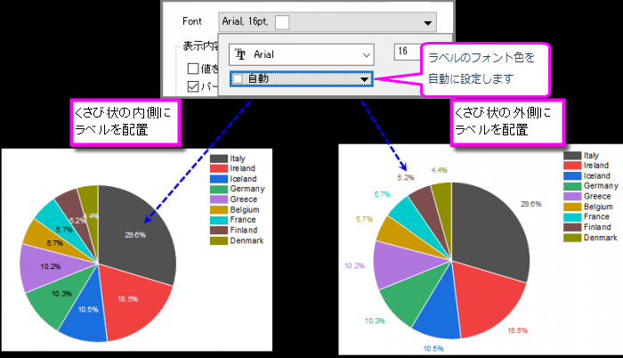
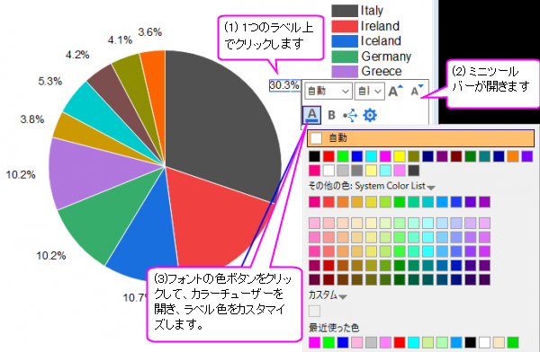

FAQ-1019 円グラフ/ドーナツグラフのラベルのフォントの色をカスタマイズする方法
FontColor-Labels-of-Pie
最終更新日: 2019/09/19
デフォルトでは、円グラフ/ドーナツグラフをプロットすると、くさびのラベルは黒で表示されます。これらのラベルのフォントの色を変更する場合は、次のことができます。
- 1つのラベルをダブルクリックして、作図の詳細 ダイアログのラベル タブを開きます。フォントコントロールパネルを展開し、色の選択を使用してフォントの色を指定します。フォントの色を自動に設定すると、ラベルの色は次のように見やすくなります。
- 
- グラフ上のラベルをクリックすると、ミニツールバー が表示され、ラベルのプロパティ（フォントの色を含む）をすばやく編集できます。 以下の手順に従って、選択したラベルオブジェクトのフォントの色をカスタマイズします。
- 
- フォントの色を自動に設定している場合、現在のラベルの色は作図の詳細ダイアログのラベルタブのフォントの色設定に従います。
- 選択したラベルオブジェクトのフォントの色を変更した場合（自動への変更を含む）、ミニツールバーの（書式の適用）ボタン
 を使用して、現在の円グラフ/ドーナツグラフの他のすべてのラベルに新しい色を適用できます。この変更は、作図の詳細ダイアログのラベルタブのフォントの色オプションに同期されることに注意してください。
を使用して、現在の円グラフ/ドーナツグラフの他のすべてのラベルに新しい色を適用できます。この変更は、作図の詳細ダイアログのラベルタブのフォントの色オプションに同期されることに注意してください。
- 1つのラベルを右クリックして、アノテーション ダイアログ を開きます。 このダイアログでは、フォントの色オプションを使用して、現在のラベルの色をカスタマイズできます。
- 色が自動に設定されている場合、現在のラベルの色は作図の詳細ダイアログのラベルタブのフォントの色設定に従います。
- 現在のラベルの色を特定の色（「赤」と同じ）に変更したら、適用ドロップダウンリストを使用して、現在のプロット/レイヤー/グラフの他のラベルにフォントの色を適用できます。 この変更は、作図の詳細ダイアログのラベルタブのフォントの色オプションと同期されることに注意してください。
キーワード ：円グラフラベル、自動カラー、テキストオブジェクト、くさびカラー、ラベル色、ドーナツプロット